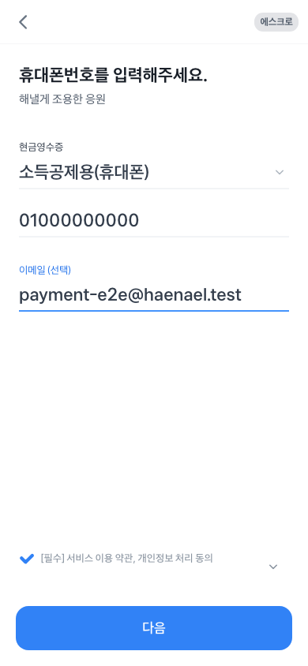
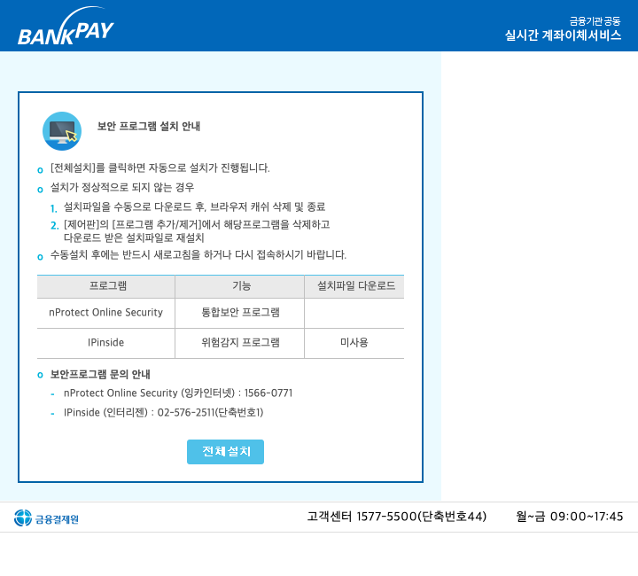

Toss Payments 샌드박스 종단 검증
G4-PAY는 테스트 주문 생성부터 Toss Payments 샌드박스 승인 콜백과 주문 상태 반영까지 확인하는 결제 검증 범위입니다. 실제 staging과 Toss Payments 샌드박스를 사용했고, mock 승인이나 성공 URL 강제 이동은 사용하지 않았습니다.
범위 판정: BLOCKED · BankPay 데스크톱 보안 프로그램을 통한 외부 계좌 인증 필요
EXIT 1주문 생성·승인·콜백·상태 반영
EXIT 1취소·실패·중복 콜백 전체
HTTP 200Toss Payments BankPay 인증 준비
HTTP 200BankPay 시작 요청
PASS실제 사용자 취소·금액 불일치
EXIT 0QA 계약·전체 단위 회귀
필수 입력 검증과 외부 인증 전환

필수 입력 검증 오류 0건 필수 약관 동의, 휴대전화 번호와 이메일을 접근성 label로 입력한 뒤 브라우저 validation 오류가 없음을 확인했습니다.
BankPay 외부 인증 단계 Toss Payments의 인증 준비 요청과 BankPay 시작 요청이 각각 HTTP 200을 반환한 뒤 nProtect·IPinside 설치 안내로 전환됐습니다.- 기존 자동화는 첫 번째 다음 클릭 직후 성공으로 간주해 빨간 validation 화면에서 콜백을 기다렸습니다. 필수 label과 실제 DOM 전환을 검증하도록 수정했습니다.
- 관찰된 popup은 Toss Payments의
/transfer/bankpay와 BankPay의/StartBankPay.do입니다. - Toss Payments
transfer-authentication/BANKPAY/preparePOST와 BankPayStartBankPay.doPOST가 모두 HTTP 200이었습니다. - 그 다음 단계는 브라우저 입력이나 제품 callback이 아니라 데스크톱 뱅킹 보안 프로그램 설치와 실제 계좌 인증입니다. 이 경계를 우회하지 않았으므로 성공 콜백과 DB 상태 반영은 PASS로 기록하지 않았습니다.
취소·오류 경로
 실제 결제창 취소 PASS
결제창 취소 뒤 제품의 재시도 안내가 표시되고 주문 상태가 READY 또는 PENDING에서 잘못 승인되지 않았습니다.
실제 결제창 취소 PASS
결제창 취소 뒤 제품의 재시도 안내가 표시되고 주문 상태가 READY 또는 PENDING에서 잘못 승인되지 않았습니다.
- 금액이 다른 callback은 HTTP 400으로 거부됐습니다.
- 취소 뒤 주문은 승인 상태로 변하지 않았습니다.
- 실패 callback과 중복 성공 callback은 성공 승인을 선행해야 검증할 수 있어 외부 인증 경계와 함께 BLOCKED입니다.
- staging의
PAYMENTS_ENABLED는 검증 뒤false로 복구했고,TOSS_SECRET_KEY는 남지 않았으며 테스트 fixture 잔여도 0건입니다.
소스와 기준
필수 입력 selector와 validation 전환 결함은 수정했지만 실제 승인 콜백은 BankPay 외부 계좌 인증을 통과하지 못했습니다. 따라서 주문 승인·상태 반영과 실패·중복 콜백을 포함한 결제 검증 범위 전체는 BLOCKED이며, 운영 결제·실제 과금·운영 배포는 실행하지 않았습니다.